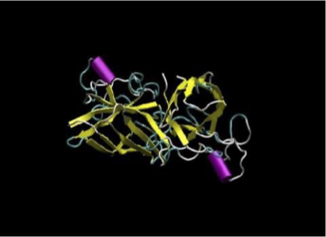

Usability with other programs¶
DL_POLY can be used in conjunction with several other programs developed by others to aid in simulation setup, visualise configurations and trajectories, and analyse results. (Note: this is not an exhaustive list!)
Aten¶
Aten is a free open-source software package that allows editing and manipulationo of atoms and molecules in isolated and periodic systems, either via a graphical user interface (GUI) or command-line scripts. It is designed primarily for creating input coordinates for molecular dynamics packages - including CONFIG files for DL_POLY systems - and can use force fields (FFs) to provide energy minimised configurations.
{kind=link}
VMD¶
VMD is a free open-source software package for visualising and analysing MD data, capable of rendering single snapshots and generating movies of MD simulations. It includes plug-ins that enable it to read DL_POLY CONFIG and HISTORY files without any further manipulation.
{kind=link}
OVITO¶
OVITO is a software package for visualising and analysing MD data, capable of rendering single snapshots and generating movies of MD simulations. Both the free open-source (OVITO Basic) and the commercial (OVITO Pro) versions can read DL_POLY CONFIG and HISTORY files.

DL_FIELD and DL_ANALYSER¶
DL_FIELD is a flexible and powerful software package designed to help users set up force field (FF) models for MD simulations with DL_POLY. It can read structures from PDB (Protein Data Bank), xyz and mol2 files and use its extensive library of organic and inorganic FFs to automatically create the required CONFIG and FIELD files for a DL_POLY simulation.
DL_ANALYSER is a general analysis program designed to read DL_POLY files. Beyond It has the ability to identify, quantity and anotate detailed atomistic interactions using the DL_F Notation for the FF system models generated by DL_FIELD.